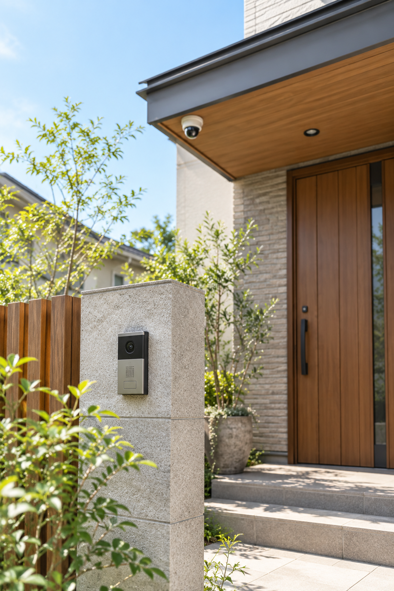

住宅対象侵入窃盗
17,152件
SECURITY & SUBSIDY GUIDE
まず知りたいのは、何を買うかではなく、
あなたの自治体でいくら補助されるか。
制度要件・予算・受付状況は変更されます。購入前に自治体公式情報をご確認ください。
OFFICIAL DATA / 2025
まずは要点だけ。詳しい出典は下にまとめています。
住宅対象侵入窃盗
1日あたり
前年比
出典：警察庁「住まいる防犯110番」（令和7年確定値）。
A HOME THAT FEELS LIKE HOME
カメラ、照明、窓、玄関。ひとつずつ、住まいに合うものを。
FIND YOUR MUNICIPALITY
第一弾は東京都。制度の入口は、あなたが使える補助制度です。

01 / CHECK THE TIMING
購入前の確認や、購入日・設置日の条件がある制度も。まず自治体ページで「いつ買えるか」を確認してから選びましょう。
自治体ごとの条件を見るFROM SUBSIDY TO PRODUCT
固定設置・録画・耐候性・購入証明を確認しながら、暮らしに合う候補を比較します。
総合おすすめ
広い範囲を見たい住まいに
コスパ重視
玄関・勝手口を狙って守る
設置しやすさ
配線が難しい場所にも